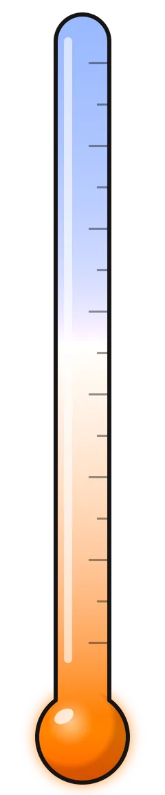
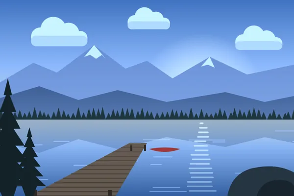
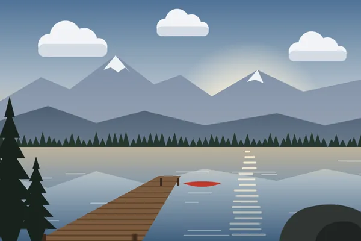
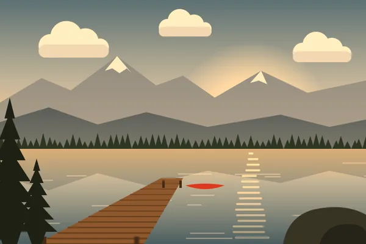

Light has colour. Candlelight is orange, and the shade on a clear day is blue. Our eyes and brain adjust so smoothly that we barely notice, and a sheet of white paper looks white to us whatever the light. A camera has no such instinct. You have to tell it the colour of the light so it can make white things white. That setting is white balance.
The Kelvin scale
Colour temperature is measured in kelvin, written K, a unit borrowed from physics. Heat a dark object and it starts to glow. First deep red, then orange and yellow, then white and finally bluish white. The temperature at which it glows a given colour gives that colour its number. That’s why the scale feels backwards. Warm-looking orange light has a low number, around 2,000 K, while cool-looking blue light sits at 7,000 K and above.

| Light | Kelvin | Camera setting | |
|---|---|---|---|
| Clear blue sky | 10,000 K and up | Kelvin 10,000 | |
| Open shade | 7,500–8,000 K | Shade | |
| Overcast sky | 6,500–7,500 K | Cloudy | |
| Electronic flash | 5,500–6,000 K | Flash | |
| Midday sun | 5,000–5,500 K | Daylight | |
| Fluorescent tube | 4,000–4,500 K | White fluorescent | |
| Sunrise and sunset | 2,500–3,500 K | Cloudy keeps the glow | |
| Household bulb | 2,700–3,000 K | Tungsten | |
| Candle flame | about 1,900 K | Kelvin 2,500 (lowest) |
How white balance works
When you pick a white balance setting, you’re telling the camera what light you’re standing in. It then adds the opposite colour to cancel the cast. Set Tungsten, about 3,200 K, and it adds blue to neutralise the orange of a light bulb. Set Shade, about 7,000 K, and it adds amber to cancel the blue. The pictures below show one sunny scene at different settings.



It also explains something that confuses lots of people in Kelvin mode. A higher number makes the picture warmer, and a lower one makes it cooler. You aren’t choosing the colour of the picture. You’re telling the camera the colour of the light.
Auto, presets and Kelvin mode
Auto white balance copes well with most daylight and indoor light, roughly from 3,000 to 7,000 K. Outside that range, and in mixed light, it’s easily fooled. Candlelight stays too orange and deep shade too blue. A sunset loses its glow, because Auto tries to neutralise it.
Every camera also has presets. The names and exact values vary a little from one maker to the next, but you’ll typically find Tungsten at about 3,000–3,200 K, White fluorescent at about 4,000 K, Daylight at about 5,200 K, Flash at about 5,400–6,000 K, Cloudy at about 6,000 K and Shade at about 7,000–8,000 K. Kelvin mode lets you dial in a number directly, usually anywhere from 2,500 to 10,000 K.
Using white balance creatively
White balance is a creative tool as much as a fix. At sunset, Daylight or Cloudy keeps the warm glow that Auto would strip away. Set it low on purpose in daylight for a cold, wintry mood, or a little higher to warm up the skin in a portrait. At blue hour, Daylight keeps the sky a rich blue and makes the street lights glow orange.
Light through the day
Daylight changes colour from hour to hour. Just before sunrise the world looks cool and blue. As the sun comes up the light turns golden, then grows more neutral towards midday. Late in the afternoon it warms again, and after sunset comes the blue hour, when the sky glows deep blue for twenty minutes or so. Photographers plan around these times, because the same street can look like a different place at eight in the morning and at noon.
Artificial light
Indoor light varies far more than daylight. Old-style bulbs give a warm orange glow. Fluorescent tubes and LED lamps can be warm or cool, and some add a slight green or magenta tint that no kelvin setting can fully remove. That’s what the Tint slider is for. Mixed sources are the hardest case. A room lit by a window and a table lamp has two colours of light at once, and the camera can only balance for one of them.
Correcting white balance afterwards
If you shoot raw, white balance is just a setting stored with the file. You can change it as much as you like in editing and lose nothing. Most programs give you two sliders. Temperature moves the colour between blue and amber, along the same scale as the kelvin numbers. Tint moves it between green and magenta, which helps under fluorescent tubes and cheap LED lamps, because their light often has a green cast.
The quickest fix is the white balance picker. Click it on something that should be neutral, like a grey wall or the grey card you photographed earlier, and the program sets both sliders for you. JPEG files are different. The camera has already baked its white balance in, so big corrections are possible but colours can start to look a bit off. Getting it close in the camera is always the better start.
Exercises
Exercises W1–W4. Tick each one off when you’ve tried it. Your ticks stay on this phone or computer.
- W1
Every preset
Photograph one scene with every white balance preset your camera has. Which looks most natural? Which looks most interesting?
- W2
Kelvin walk
In Kelvin mode, photograph a scene at 3,000, 5,000 and 8,000 K. Then find the value that makes a white wall look truly white.
- W3
Mixed light
Photograph a room lit by both a window and a lamp. Balance once for each light and decide which suits the subject.
- W4
Keep the glow
Photograph a sunset on Auto, then again on Daylight or Cloudy. Which one keeps the warmth you saw?
Photography Handbook, © 2026 Samskara Photo Club. Text and illustrations are licensed under CC BY-NC-SA 4.0. You may share and adapt them for non-commercial use if you credit the club and share your version under the same licence. Commercial use needs the club’s permission. The club logo is not covered by the licence.